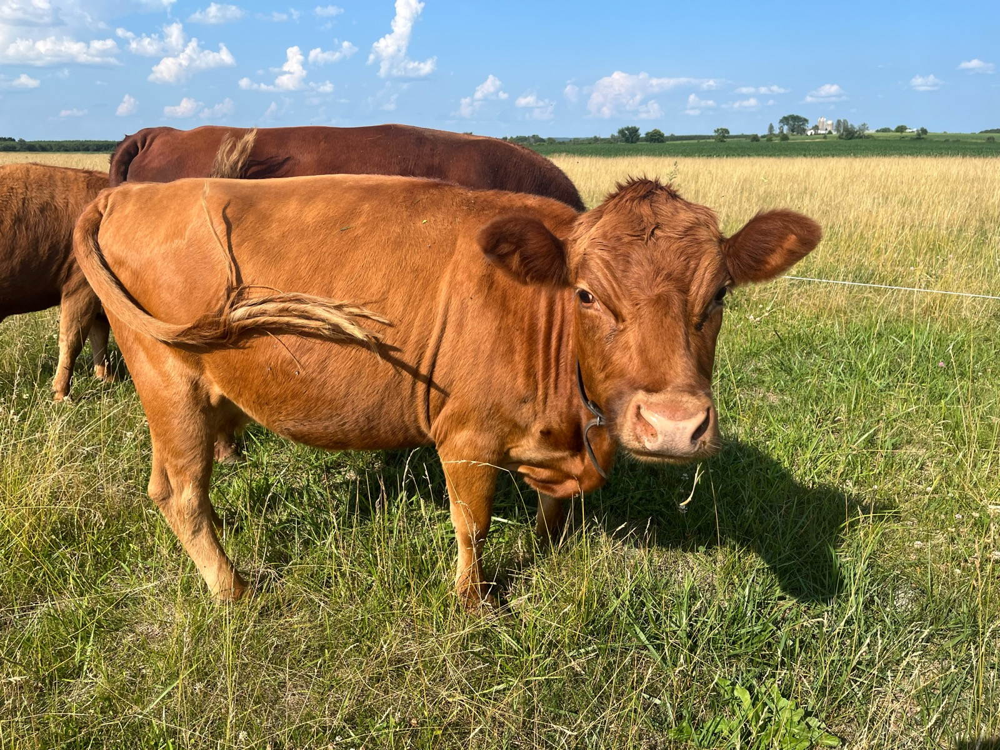
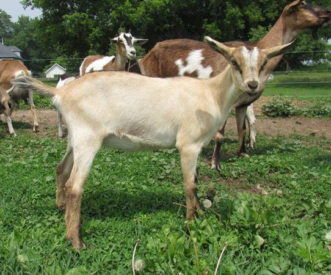

At {{ site.title }} we have a little bit of everything when it comes to livestock. Once in a while we'll have some great family milk cows, dairy goats, Scotch Collies, or registered Dexter cattle for sale. Check out the For Sale page for more details on that. Otherwise checkout some of the info about the farm with the links below.
Cows
We have been raising dairy and beef cows for many years.
Goats
Raising goats is a relatively new thing for us but we'ver enjoyed it a lot!
Dogs
We have Stoch Collies and really love our dogs.
In fact, we have a separate website just for the dogs!
Halcyon Lane Scotch Collies